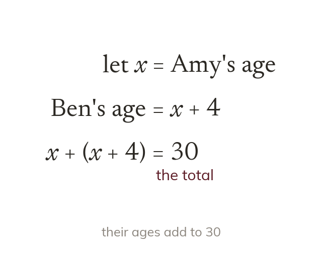

Name the unknown first
Name the unknown with a letter. Write every other quantity in terms of it. A fact that makes two things equal gives the equation.
An equation is formed by naming the unknown with a letter and writing every other quantity in terms of it. A fact that makes two things equal then gives the equation.